Свойства компонента интерфейса, унаследованного от компонента «СтандартноеКлиентскоеПриложениеСРазделами»
Клиентское приложение, которое содержит следующие стандартные области:
- Панель навигации, она расположена слева;
- Область содержимого, в которой открываются формы;
- Вкладки последнего уровня навигации, они расположены в верхней части области содержимого;
- Панель действий, она расположена справа;
- Дополнительный командный интерфейс, часть панели действий, обычно содержит команды профиля.
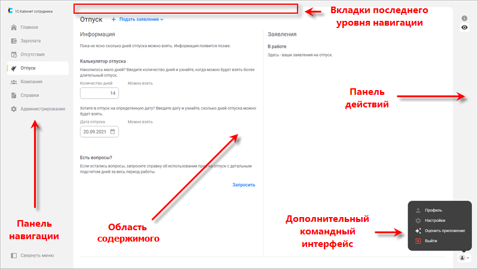
Иерархия наследования
Свойства
- ВидимостьИнформацииОПриложении
- Показать или скрыть на панели действий иконку Информация, которая предоставляет доступ к информации о
приложении.Пример YAML-файла:
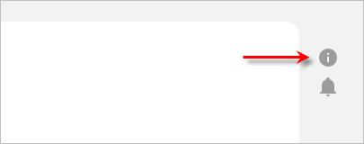
ВидЭлемента: КомпонентИнтерфейса ОбластьВидимости: Подсистема Ид: 8e6c16f6-a3f8-4a63-a53d-d48aa146a3c9 Имя: МоеПриложение Наследует: Тип: СтандартноеКлиентскоеПриложениеСРазделами ВидимостьИнформацииОПриложении: Ложь - ВидимостьЦентраУведомлений
- Показать или скрыть на панели действий иконку Колокольчик, которая предоставляет доступ к центру уведомлений.Пример YAML-файла:
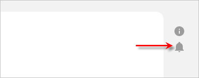
ВидЭлемента: КомпонентИнтерфейса ОбластьВидимости: Подсистема Ид: 8e6c16f6-a3f8-4a63-a53d-d48aa146a3c9 Имя: МоеПриложение Наследует: Тип: СтандартноеКлиентскоеПриложениеСРазделами ВидимостьЦентраУведомлений: Ложь - Последний уровень навигации это пункты, у которых нет соседних групп, например Задачи и
События:
- Главная
- Пресейл
- Мероприятия
- Задачи
- События
- Настройки
- Сервис
- ВПанелиНавигации — при нажатии на Мероприятия эти пункты будут показаны в панели навигации, при нажатии на Задачи откроется содержимое пункта Задачи;
- Страницы — эти пункты не будут показаны в панели навигации. При нажатии на Мероприятия откроется содержимое первого из этих пунктов — Задачи, а в верхней части области содержимого появятся вкладки последнего уровня навигации — Задачи и События;
- Авто — вид Страницы.
Вариант Страницы: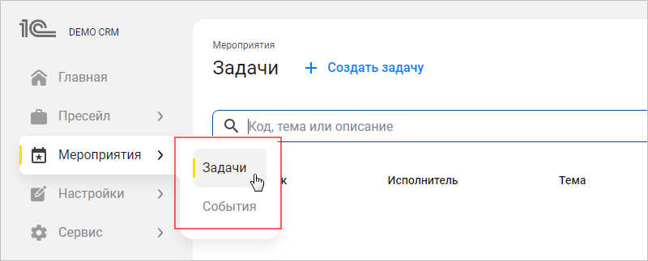
Пример YAML-файла: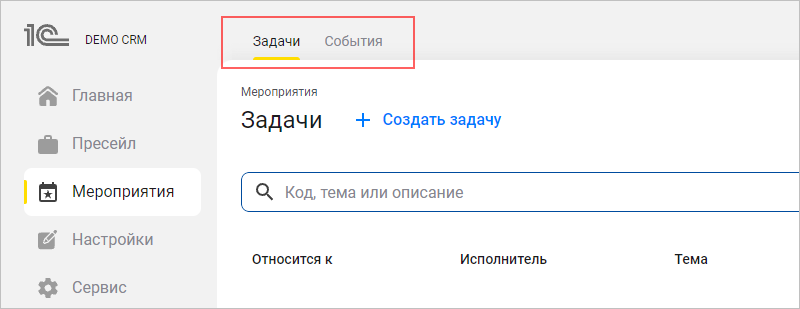
ВидЭлемента: КомпонентИнтерфейса ОбластьВидимости: Подсистема Ид: 8e6c16f6-a3f8-4a63-a53d-d48aa146a3c9 Имя: МоеПриложение Наследует: Тип: СтандартноеКлиентскоеПриложениеСРазделами ВидПоследнегоУровняНавигации: ВПанелиНавигации - ДополнительныйКомандныйИнтерфейс
- ФрагментКомандногоИнтерфейса, содержащий одну группу с командами. Описывает интерфейс дополнительной панели навигации.Пример YAML-файла:
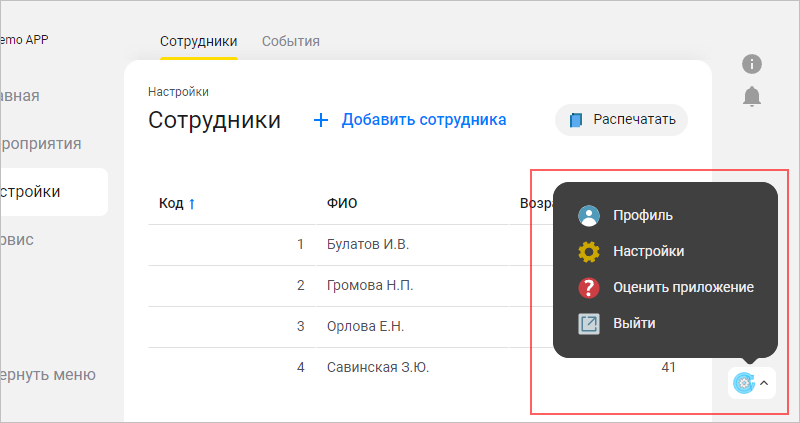
ВидЭлемента: КомпонентИнтерфейса ОбластьВидимости: Подсистема Ид: 8e6c16f6-a3f8-4a63-a53d-d48aa146a3c9 Имя: МоеПриложение Наследует: Тип: СтандартноеКлиентскоеПриложениеСРазделами ДополнительныйКомандныйИнтерфейс: ДополнительныйИнтерфейс - КомандныйИнтерфейсПанелиДействий
- ФрагментКомандногоИнтерфейса, состоящий из команд. Описывает интерфейс панели
действий.Пример YAML-файла:
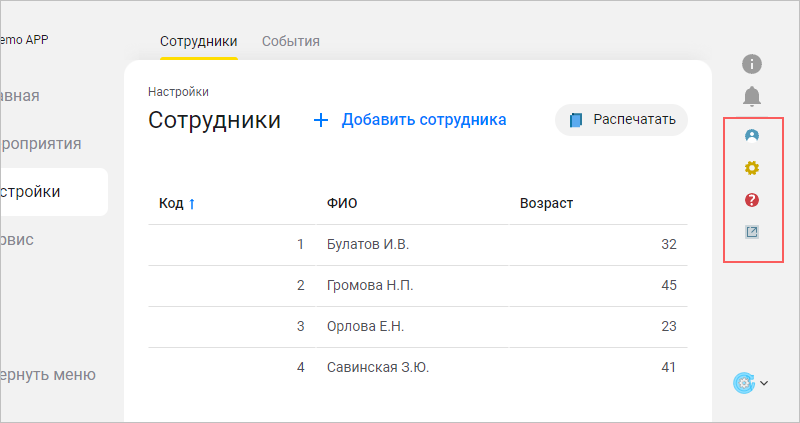
ВидЭлемента: КомпонентИнтерфейса ОбластьВидимости: Подсистема Ид: 8e6c16f6-a3f8-4a63-a53d-d48aa146a3c9 Имя: МоеПриложение Наследует: Тип: СтандартноеКлиентскоеПриложениеСРазделами КомандныйИнтерфейсПанелиДействий: ПанельДействий - КомандныйИнтерфейсПанелиНавигации
- ФрагментКомандногоИнтерфейса. Описывает интерфейс панели навигации.Пример YAML-файла:
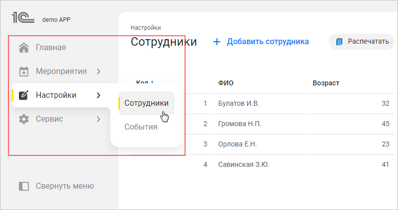
ВидЭлемента: КомпонентИнтерфейса ОбластьВидимости: Подсистема Ид: 8e6c16f6-a3f8-4a63-a53d-d48aa146a3c9 Имя: МоеПриложение Наследует: Тип: СтандартноеКлиентскоеПриложениеСРазделами КомандныйИнтерфейсПанелиНавигации: ПанельНавигации - Логотип
- Логотип приложения. Ссылка на ресурс.Пример YAML-файла:
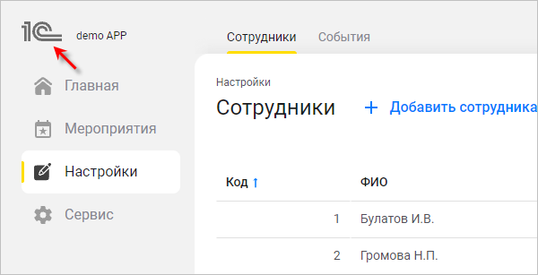
ВидЭлемента: КомпонентИнтерфейса ОбластьВидимости: Подсистема Ид: 8e6c16f6-a3f8-4a63-a53d-d48aa146a3c9 Имя: МоеПриложение Наследует: Тип: СтандартноеКлиентскоеПриложениеСРазделами Логотип: Логотип.svg - Вертикальная — слева от области содержимого;
- Горизонтальная — над областью содержимого;
- Авто — вид Вертикальная.
Пример YAML-файла: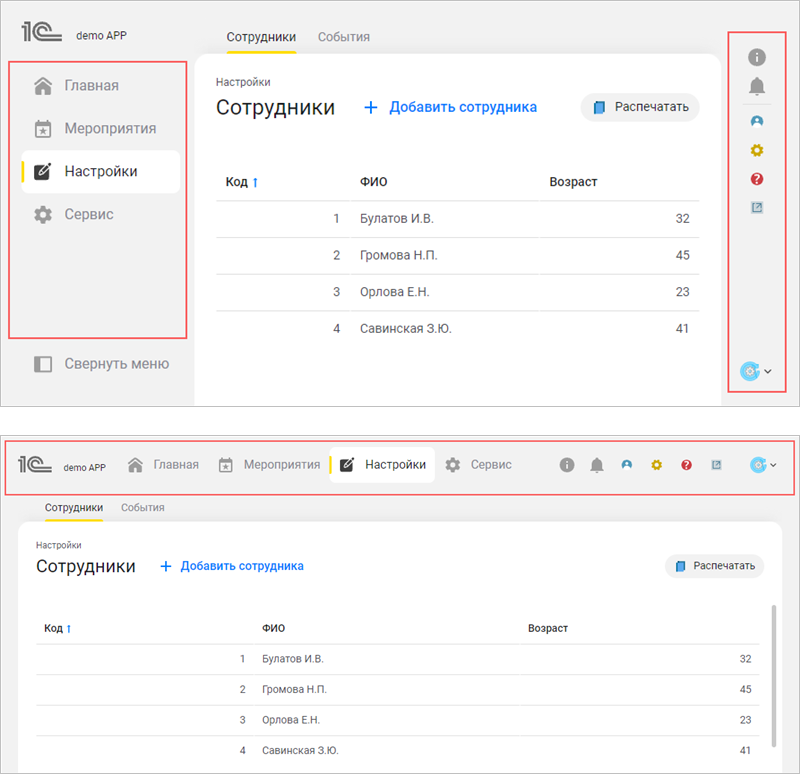
ВидЭлемента: КомпонентИнтерфейса ОбластьВидимости: Подсистема Ид: 8e6c16f6-a3f8-4a63-a53d-d48aa146a3c9 Имя: МоеПриложение Наследует: Тип: СтандартноеКлиентскоеПриложениеСРазделами ОриентацияПанелиНавигации: Горизонтальная- ОсобоеОформлениеПервогоРаздела
- Необходимость оформления области содержимого
первого раздела особым образом, отличным от других разделов:
- Серый фон;
- Нет скруглений верхних углов.
Пример YAML-файла: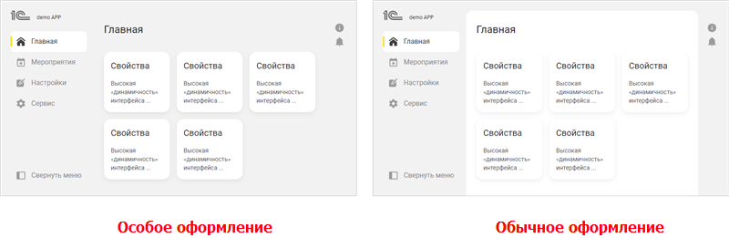
ВидЭлемента: КомпонентИнтерфейса ОбластьВидимости: Подсистема Ид: 8e6c16f6-a3f8-4a63-a53d-d48aa146a3c9 Имя: МоеПриложение Наследует: Тип: СтандартноеКлиентскоеПриложениеСРазделами ОсобоеОформлениеПервогоРаздела: Ложь - ПоложениеЗаголовка
- Способ совместного отображения логотипа и заголовка приложения:
- Горизонтально — «1С:Кабинет сотрудника» отображает заголовок справа от логотипа;
- Вертикально — «1С:Кабинет сотрудника» отображает заголовок под логотипом;
- НеОтображать — «1С:Кабинет сотрудника» отображает только логотип, заголовок не отображается.
- Авто — «1С:Кабинет сотрудника» использует вариант Горизонтально.
Пример YAML-файла: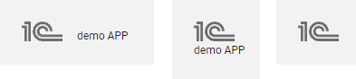
ВидЭлемента: КомпонентИнтерфейса ОбластьВидимости: Подсистема Ид: 8e6c16f6-a3f8-4a63-a53d-d48aa146a3c9 Имя: МоеПриложение Наследует: Тип: СтандартноеКлиентскоеПриложениеСРазделами ПоложениеЗаголовка: Вертикально